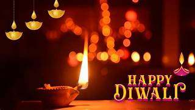
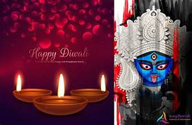
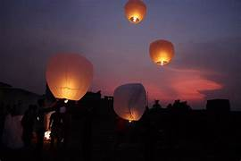
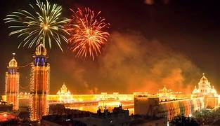
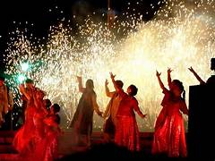

| |
|||||||||
|---|---|---|---|---|---|---|---|---|---|
| Diwali is the Hindu festival of lights, with variations celebrated in other Indian religions.[a] It symbolises the spiritual "victory of light over darkness, good over evil, and knowledge over ignorance".Diwali is celebrated during the Hindu lunisolar months of Ashvin (according to the amanta tradition) and Kartika—between around mid-September and mid-November.[10][11][12][13] The celebrations generally last five or six days. Diwali is connected to various religious events, deities and personalities, such as being the day Rama returned to his kingdom in Ayodhya with his wife Sita and his brother Lakshmana after defeating the demon king Ravana.It is also widely associated with Lakshmi, the goddess of prosperity, and Ganesha, the god of wisdom and the remover of obstacles.Other regional traditions connect the holiday to Vishnu, Krishna, Durga, Shiva, Kali, Hanuman, Kubera, Yama, Yami, Dhanvantari, or Vishvakarman. |  | ||||||||
| During the festival, the celebrants illuminate their homes, temples and workspaces with diyas , candles and lanterns.[9] Hindus, in particular, have a ritual oil bath at dawn on each day of the festival. Diwali is also marked with fireworks and the decoration of floors with rangoli designs, and other parts of the house with jhalars. Food is a major focus with families partaking in feasts and sharing mithai.The festival is an annual homecoming and bonding period not only for families, but also for communities and associations, particularly those in urban areas, which will organise activities, events and gatherings. Many towns organise community parades and fairs with parades or music and dance performances in parks. Some Hindus, Jains and Sikhs will send Diwali greeting cards to family near and far during the festive season, occasionally with boxes of Indian confectionery.Another aspect of the festival is remembering the ancestors. | |||||||||
|  |  |  |  | ||||||
| |
|||||||||